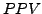
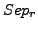
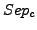
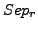
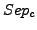
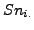
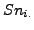
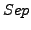
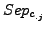
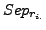

Abruptely, graph clustering consists in grouping the nodes of the networks into different classes or clusters. The groupment of the nodes can be done according to various different criteria, i.e., nodes of the same color, nodes of the same type, etc. Commonly, nodes are grouped according to the fact they present a relatively high number of connections between them compared to the number of connections with the other nodes composing the network. In the following, we will only consider clustering methods aiming at retrieving highly interconnected groups of nodes in a network.
In bioinformatics, a lot of clustering approaches have already been applied to various types of network, e.g. protein-protein interaction network (see among others [31,16,19]), metabolic graphs [9], biological sequences ([7,21]), etc.
Clustering of protein interaction network may be of valuable help in order to retrieve in a large graphs real biological complexes in the cell. Moreover, if in the detected complexes some of proteins are of unknown function but the rest of the proteins present all present a similar function, this may give insights in the function of the unknown protein.
In the following, we will apply different graph based clustering approaches on the yeast protein - protein interaction network published by Gavin et al [10] and obtained by multiple co-immunoprecipitation experiments with each yeast protein used as bait followed by a mass spectrometry procedure to identify all the proteins that precipitated with the baits.
The clustering algorithms we will apply are the MCL [33,7] and RNSC [16]. Hereafter, follows a short description of both clustering algorithms copied from [2].
The Markov Cluster algorithm (MCL) simulates a flow on the graph by calculating successive powers of the associated adjacency matrix. At each iteration, an inflation step is applied to enhance the contrast between regions of strong or weak flow in the graph. The process converges towards a partition of the graph, with a set of high-flow regions (the clusters) separated by boundaries with no flow. The value of the inflation parameter strongly influences the number of clusters.
The second algorithm, Restricted Neighborhood Search Clustering (RNSC), is a cost-based local search algorithm that explores the solution space to minimize a cost function, calculated according to the numbers of intra-cluster and inter-cluster edges. Starting from an initial random solution, RNSC iteratively moves a vertex from one cluster to another if this move reduces the general cost. When a (user-specified) number of moves has been reached without decreasing the cost function, the program ends up.
In order to dispose of a negative control, we advice the reader to read the next chapter about graph randomization and alteration.
In this demonstration, we will compare the performances of two graph based clustering algorithms MCL and RNSC. First, we will apply them to the protein - protein interaction described by Gavin et al [10], secondly we will compare the resulting clusters to the complexes annotated for the yeast in the MIPS database [23].
Note that as the interaction network and the MIPS complexes are different dataset (i.e. different proteins), the performances of the algorithm will be rather low.
To run this tutorial on the command line, you need to have both RNSC and MCL installed on your computer. You can find the MCL source code on http://micans.org/mcl/ and RNSC on http://rsat.scmbb.ulb.ac.be/ rsat/rnsc/rnsc_rewritten_compiled32.zip.
In the right panel, you should now see a form entitled ``MCL''.
The form is now filled with the Gavin co-immunoprecipitation protein interaction network graph in the tab-delimited format, and the parameters have been set up to their appropriate value for the demonstration, i.e., the inflation value (the MCL main parameter) is set to 1.8, the optimal value for MCL protein interaction network clustering [2].
The inflation acts mainly on the number of clusters resulting from the clustering, i.e., by increasing the inflation, you will obtain a larger number of smaller clusters.
Note that MCL accepts weighted networks (which is not the case here), a higher weight on an edge will reinforce the strength of the link between two nodes.
The computation should take less than one minute. On one hand, the result page displays a link to the result file and on the other hand a graphic showing the size distribution of the obtained complexes is also available. These will be discussed in the Interpretation of the results section.
In the right panel, you should now see a form entitled ``RNSC''.
The form is now filled with the Gavin co-immunoprecipitation protein interaction network graph in the tab-delimited format, and the parameters have been set up to their appropriate value for the demonstration, i.e., the numerous RNSC parameters are set to the optimal values for RNSC protein interaction network clustering determined in [2]. However, in this study, we found that the RNSC performances were not strongly affected by the parameters values.
Note that, unlike MCL, RNSC does not accept weighted networks.
The computation should take less than one minute. On one hand, the result page displays a link to the result file and on the other hand a graphic showing the size distribution of the obtained complexes is also avaible. These will be discussed in the Interpretation of the results section.
In the right panel, you should now see a form entitled ``compare-classes''. This program will build a contigency table, i.e., a table where each line represents the annotated complexes and each column the clusters of highly connected proteins. This matrix will then be used to compute quality statistics.
In the right panel, you should now see a form entitled ``contingency-stats''. This program will compute the statistics described in [2], namely the , the sensitivity and the Separation statistics in order to estimate the quality of a clustering results to predict the complexes annotated in the MIPS.
The resulting statistics will be described in the following section Interpretation of the results, save them under the name gavin_2006_mcl_inf_1.8_vs_mips_stats.tab.
Re-do the whole procedure with the file obtained with RNSC and save the contingency-stats output under the name gavin_2006_rnsc_vs_mips_stats.tab.
If you have installed a stand-alone version of the NeAT distribution, you can also use all the programs on the command-line. This requires to be familiar with the Unix shell interface. If you do not have the stand-alone tools, you can skip this section and read the next section (Interpretation of the results).
The explanation of the parameters used for RNSC and MCL in this approach are described in the Web server section of this chapter.
We will now describe the use of RNSC, MCL, compare-classes, convert-classes, convert-graph and contigency-stats as command line tools. As a preliminary step, go on the NeAT demo dataset web page (http://rsat.scmbb.ulb.ac.be/rsat/data/neat_tuto_data/) and download the MIPS complexes (mips_complexes_names.tab) and the Gavin interaction dataset (gavin_2006_names.tab).
mcl gavin_2006_names.tab -I 1.8 --abc -o gavin_2006_mcl_inf_1.8_clusters.mclThe file gavin_2006_mcl_inf_1.8_clusters.mcl is created and contains the clusters of highly connected node in the interaction dataset. However, this file is formatted in the MCL format that is not usable by the NeAT / RSAT tools. We will thus use the program convert-classes to convert this file in a tab delimited format with the following command.
convert-classes -i gavin_2006_mcl_inf_1.8_clusters.mcl \ -o gavin_2006_mcl_inf_1.8_clusters.tab \ -from mcl -to tabThe resulting file is a two column file containing for each node (first column) the cluster to which it belongs (second column).
convert-graph -from tab -to rnsc \ -i gavin_2006_names.tab -o gavin_2006_rnsc
Two files are created, gavin_2006_rnsc.rnsc and gavin_2006_rnsc_node_names.rnsc. The first one contains the graph in itself, under the format of an adjacency list. However, each node is identified by a number. The protein names corresponding to the nodes identifiers are encoded in the second file (two column tab delimited file).
rnsc -g gavin_2006_rnsc.rnsc -t 50 -T 1 -n 15 -N 15 -e 3 -D 50 \ -d 3 -o gavin_2006_rnsc_clusters.rnsc
The file gavin_2006_rnsc_clusters.rnsc is created and contains the clusters of highly connected node in the interaction dataset. However, this file is formatted in the RNSC format that is not usable by the NeAT / RSAT tools. We will thus use the program convert-classes to convert this file in a tab delimited format with the following command.
convert-classes -i gavin_2006_rnsc_clusters.rnsc \
-o gavin_2006_rnsc_clusters.tab \
-from rnsc -to tab \
-names gavin_2006_rnsc_node_names.rnsc
The resulting file is a two column file containing for each node (first column) the cluster to which it belongs (second column).
In this section, we will describe how to build a contingency table by comparing the clusters extracted from the networks by MCL and RNSC to annotated complexes and the way to compute statistics on this contingency-table.
We will only describe the procedure for the MCL results. You should redo this section for the RNSC clustering results.
compare-classes -q gavin_2006_inf_1.8.tab \
-r mips_complexes_names.tab -matrix QR \
-o gavin_2006_inf_1.8_cc_complexes_matrix.tab
The file gavin_2006_inf_1.8_cc_complexes_matrix.tab now contains a contigency table in a tab delimited format.
contingency-stats -i gavin_2006_inf_1.8_cc_complexes_matrix.tab \
-o gavin\_2006\_mcl\_inf\_1.8\_vs\_mips\_stats.tab
Re-do this section with the gavin_2006_rnsc_clusters.rnsc to obtain a file called gavin_2006_rnsc_vs_mips_stats.tab.
The clustering quality will be evaluated from this table by calculating the Sensitivity ( ), the Positive predictive
value (), the row wise separation () and the cluster separation ().
), the Positive predictive
value (), the row wise separation () and the cluster separation ().
For each complex, we can calculate a sensitivity value. This corresponds to the maximal fraction of protein of a complex that are attributed by a clustering algorithm to the same cluster.  measures how well proteins belonging to the same complex are grouped within the same cluster.
measures how well proteins belonging to the same complex are grouped within the same cluster.
Moreover, for each cluster  , we calculated the Positive Predictive Value () which corresponds to the maximal fraction of a cluster belonging to the same complex. This reflects the ability of this cluster to detect one complex.
, we calculated the Positive Predictive Value () which corresponds to the maximal fraction of a cluster belonging to the same complex. This reflects the ability of this cluster to detect one complex.
To summarize these values at the level of the confusion table, we calculated the average of these values.
First, we calculated their classical mean by averaging all the  and  values. We also calculated a weighted mean where the clusters and complexes have a weight proportional to their relative size on the the calculation of the mean.
and  values. We also calculated a weighted mean where the clusters and complexes have a weight proportional to their relative size on the the calculation of the mean.
Sensitivity and reflect two contradictory tendencies of the clustering.  increases when all the proteins of the same complex are grouped in the same cluster and decreases when proteins coming from different complexes are grouped in the same cluster. If all the proteins of the network are grouped in the same cluster, we maximize the
increases when all the proteins of the same complex are grouped in the same cluster and decreases when proteins coming from different complexes are grouped in the same cluster. If all the proteins of the network are grouped in the same cluster, we maximize the  but the is almost 0. On the other hand, if each protein is placed in a different cluster, the is maximized but the sensitivity is very low. A compromise must be found between these two cases by using another statistics. We defined the geometric accuracy as the geometrical mean of the and the
but the is almost 0. On the other hand, if each protein is placed in a different cluster, the is maximized but the sensitivity is very low. A compromise must be found between these two cases by using another statistics. We defined the geometric accuracy as the geometrical mean of the and the  .
.
We also defined another metrics called Separation (). High values indicated a high bidirectionnal correspondance between a cluster and a complex.
The row-wise separation estimates how a complex is isolated from the others. Its maximal value is 1 if this correspondance is perfect, i.e., when all the protein of a complex are grouped in one cluster and if this cluster does not contain any other protein. This maximal value may also be reached when the complex is separated between many clusters containing only members of the complex.
The column-wise separation indicates how well a cluster isolates one or more complex from the other clusters. The maximal value 1 indicates that a cluster contains all the elements of one or more complexes.
As for the sensitivity and the , for each clustering result, all values of  and  are averaged over all clusters and all complexes. We then calculate a global separation value by calculating the geometrical mean of the average row wise separation and of the average column wise separation.
In the following, we can observe the statistics described in the previous paragraph computed for the clustering results of RNSC and MCL.
We can observe that MCL seems to produce slightly more valuable results as
These results might certainly be explained by the large number of clusters found by RNSC compared to MCL. Indeed, the increases and the sensitivity decreases with the number of a clusters. We can observe the same tendencies for the other metrics.
| metrics | RNSC | MCL |
| ncol | 470 | 189 |
| nrow | 220 | 220 |
| min | 0 | 0 |
| max | 18 | 27 |
| mean | 0.0086 | 0.0214 |
| sum | 889 | 889 |
| Sn | 0.603 | 0.652 |
| PPV | 0.424 | 0.472 |
| acc | 0.513 | 0.562 |
| acc_g | 0.505 | 0.555 |
| Sn_w | 0.622 | 0.767 |
| PPV_w | 0.642 | 0.549 |
| acc_w | 0.632 | 0.658 |
| acc_g_w | 0.632 | 0.649 |
| sep | 0.303 | 0.353 |
| sep_c | 0.207 | 0.381 |
| sep_r | 0.443 | 0.327 |
Remark: The following table was generated using the RSAT program compare-scores, see the help of this command line tool for more information